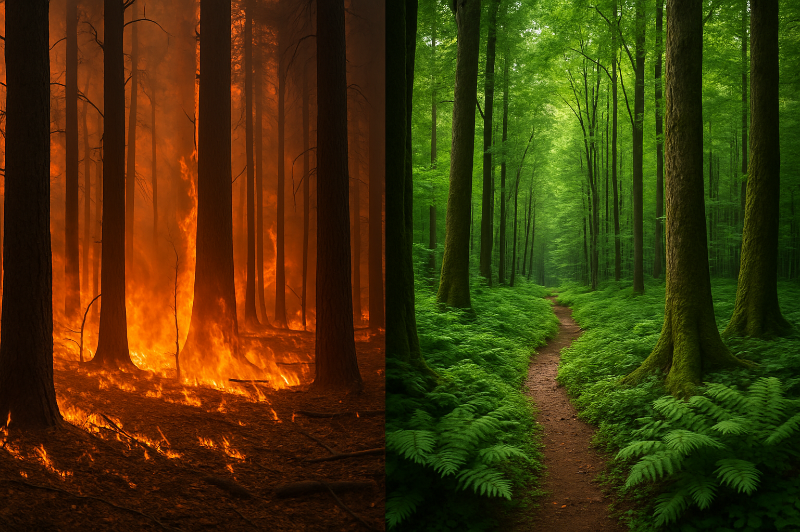

O site "Ação Contra a Mudança Global do Clima" nasce com um objetivo claro: ser uma plataforma acessível, educativa e engajadora, voltada para conscientizar a sociedade sobre a crise climática e, mais importante, inspirar ações concretas que possam frear seus impactos.
Nosso propósito vai além de apenas informar. Queremos mobilizar. Cada seção deste site foi pensada para mostrar que qualquer pessoa, independentemente de onde esteja ou da sua realidade, pode contribuir para um planeta mais saudável e equilibrado. O combate às mudanças climáticas não está restrito aos governos ou grandes organizações — ele começa em casa, no trabalho, na escola, nos pequenos hábitos do dia a dia.
Aqui você encontrará:
“O planeta pode sobreviver sem nós. Nós é que não sobrevivemos sem ele.”
A mudança climática deixou de ser uma ameaça distante para se tornar uma realidade visível e implacável. Hoje, já sentimos os efeitos em todas as partes do mundo: enchentes em cidades que nunca enfrentaram chuvas tão intensas, secas prolongadas que afetam plantações e abastecimento de água, incêndios florestais incontroláveis, derretimento acelerado das calotas polares, ondas de calor letais e a extinção de diversas espécies.
Segundo relatórios do Painel Intergovernamental sobre Mudanças Climáticas (IPCC), temos menos de uma década para limitar o aquecimento global a 1,5°C acima dos níveis pré-industriais. Acima disso, as consequências podem se tornar irreversíveis — tanto para o planeta quanto para a humanidade.
Essa não é apenas uma crise ambiental. É uma crise social, econômica e de justiça climática. As populações mais vulneráveis, que menos contribuíram para as emissões de carbono, são as que mais sofrem os efeitos dessa emergência.
O tempo está contra nós, mas a janela de ação ainda está aberta. A boa notícia é que ainda podemos mudar o curso da história. Temos tecnologia, temos conhecimento e temos exemplos reais de soluções funcionando. O que precisamos agora é de vontade coletiva.
Este site é um chamado. Um alerta. Mas também uma ferramenta de esperança e reconstrução. A crise climática é urgente, mas com ação coordenada e compromisso global, ela é também reversível.
“A mudança climática é a maior ameaça à segurança global do nosso tempo.”
— António Guterres, Secretário-Geral da ONU
A crise climática é real, mas o futuro ainda não está escrito. Todos nós temos o poder de decidir que tipo de mundo queremos deixar para as próximas gerações. Não precisamos ser especialistas ou líderes mundiais para causar impacto — precisamos apenas começar, com aquilo que está ao nosso alcance.
Cada passo importa. Cada escolha conta.
“Não é sobre salvar o planeta. É sobre salvar a humanidade.”
— Neil deGrasse Tyson